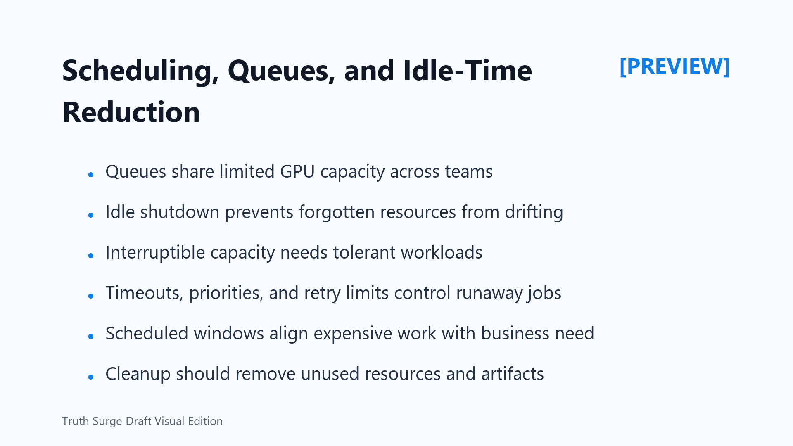

Scheduling, Queues, and Idle-Time Reduction
Connecting to LMS... Progress: in progress

Narration
Scheduling is one of the most practical ways to reduce GPU waste. When teams share a limited pool through queues or job schedulers, they can prioritize important work, avoid over-allocation, and make idle capacity visible. A queue also creates a natural place to apply limits and ownership rules.
Idle shutdown policies are especially valuable for notebooks, development workers, test clusters, and temporary endpoints. If a resource has no useful work, no active owner, or no current schedule, it should not quietly consume budget. Shutdown should be predictable and communicated so teams can save work properly.
Interruptible capacity can be useful when a job can tolerate stops and restarts. That requires checkpointing, retry limits, idempotent job behavior, and clear expectations. It is not a universal answer, but it can be a strong fit for some batch, training, and evaluation work.
Timeouts, priorities, and retry limits prevent runaway execution. A failed job should not restart forever. A low-priority experiment should not block urgent production work. A scheduled window can align expensive processing with real business need.
Cleanup automation closes the loop. Volumes, temporary datasets, checkpoints, unused endpoints, stale images, and generated artifacts should have owners and retention rules. Reducing idle time often saves money without changing the model or reducing useful output.
Scheduling also protects people. When queues, priorities, and windows are clear, teams spend less time negotiating access informally and more time improving the work itself. Predictable scheduling makes cost control feel like a normal operating practice.